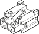

B022 Driver's side front window fuse ( FACIA )
- Path
- Electrical equipment > 3 Connectors > B Various fuse holders and valves > B22 Driver's side front window fuse > B022 Driver's side front window fuse ( FACIA )
- Kind
- connector pinout (pin -> wire colour -> other end)
- Applies to
- all engines; all production periods; only with equipment: ELX setup
- Interactive page
- https://sloeber94.github.io/elrnDB-fMltpl/en/#/2889836
Applies to: all engines; all production periods; only with equipment: ELX setup

Wiring | Colour |
|---|---|
GIALLO (yellow) |